회사소개
비전
연혁
사업실적
인증현황
오시는길
유역통합물관리
도시물순환
물순환체계
나무여과상자
식물재배화분
무관리 옥상녹화
모듈형 침투통
레인가든
침투도랑
농촌유역관리
고효율 인공습지
소규모 공공하수처리
해외사업
제품 및 소재
생산시설
다공성세라믹담체
빗물머금석
포러스샌드
LID용 식생토
KR
EN
CN
농촌유역관리
농촌유역관리
고효율 인공습지
고효율 인공습지
고효율 인공습지
수질정화 인공습지
생태복원형 인공습지
개요
탈질 반응, 산화 분해, 접촉 산화, 흡착 여과 4단계 반응 시스템으로 다공성 팽창 세라믹의 금속성 이온에 의한 인제거 능력이 탁월함
무동력 무인 운전 공정으로 유지 관리 용이
비점오염원 처리에 최적화된 인공습지
부하변동에의한 유연한 대처 가능 (침강지 - 얕은 습지 - 깊은 습지 - 여과 습지 - 방류못 5단계로 구성)
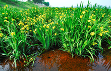
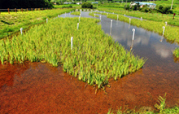
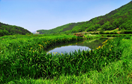
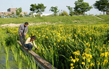
특징
타사 제품 인공습지 대비 인제거 능력 탁월
무동력 무인 운전으로 유지관리비 최소화로 경쟁력 우위
미생물 및 수생식물 식종으로 반영구적인 시설로 경쟁력 확보
여재로 사용되는 다공성 팽창 세라믹은 국내에서 직접 생산으로 타사보다 저렴
식생과 미생물을 이용한 자연 정화 방법으로 무동력 운영
기능성 미생물 여재를 사용하여 처리효율을 높임 → 지표흐름형 습지보다 부지면적 적음
세라믹 담체에 고착되어진 미생물에 의해 슬러지의 산화 등이 이루어져 슬러지 처리비용이 저렴
생태환경적인 공법으로 정화습지의 기능뿐 아니라 친미적 기능 및 생태교육장으로도 활용 가능
보유 기술 현황
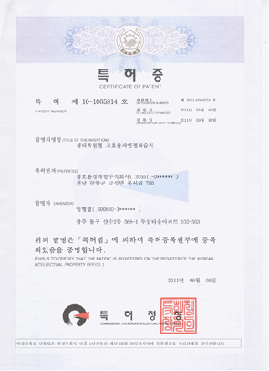
생태복원형 고효율 자연정화습지
[특허 제10-1065814호]
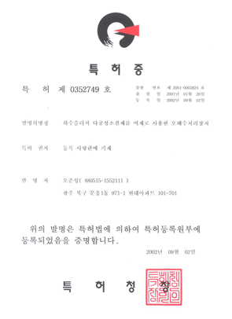
다공성 소결체를 여재로 사용한 오폐수처리장치
[특허 제0352749호]
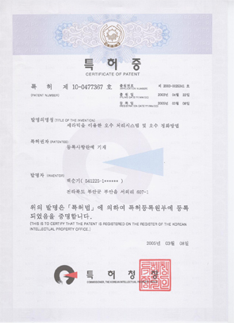
세라믹을 이용한 오수처리시스템 및 오수 정화방법
[특허 제10-0477367호]
공정 모식도
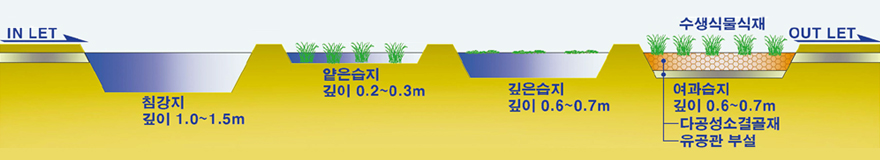
시스템 단면도
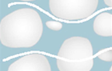
접촉·침전 과정
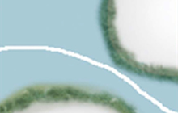
흡착 과정
산화·분해 과정
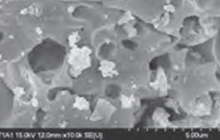
미생물 sem 사진
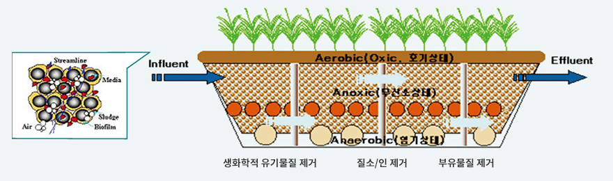
처리기작
사업 실적
여수 연등천
사업명 : 연등천 유지용수확보를 위한 인공습지
용량 : 12,000ton/day
준공일 : 2006. 12.
화순 운농리
사업명 : 운농리 생태습지 비점오염 저감사업
용량 : 3,500ton/day
준공일 : 2013. 05.
담양하수종말처리장
사업명 : 담양천 자연형 하천 조성사업
용량 : 8,000ton/day
준공일 : 2001. 05.
화순 이서천
사업명 : 이서천 수질정화 습지 조성사업
용량 : 11,750ton/day
준공일 : 2005. 06.
적용 사례
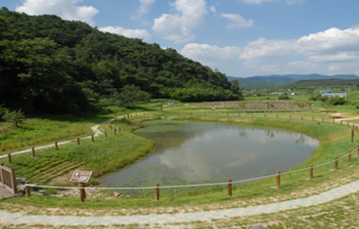
담양천 하수처리장 방류수 정화시설1
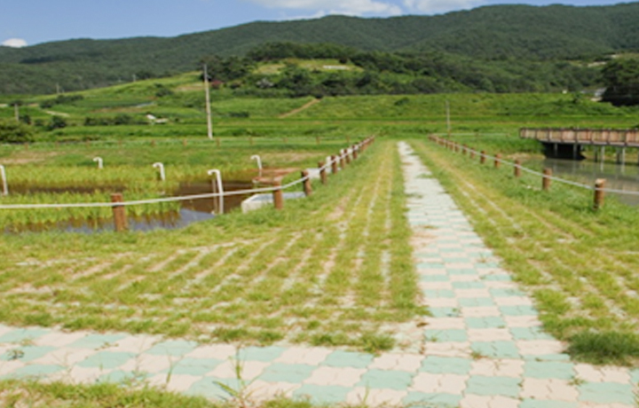
담양천 하수처리장 방류수 정화시설2
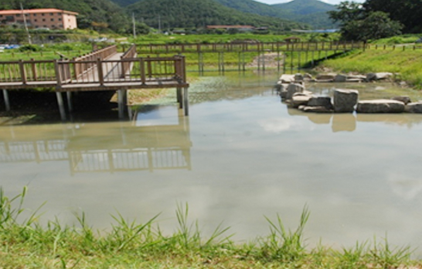
담양천 하수처리장 방류수 정화시설3
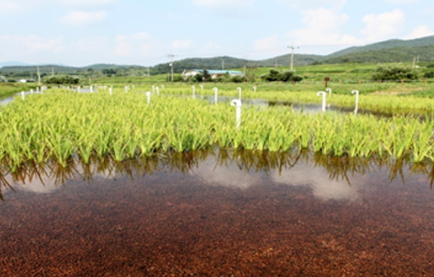
담양천 하수처리장 방류수 정화시설4
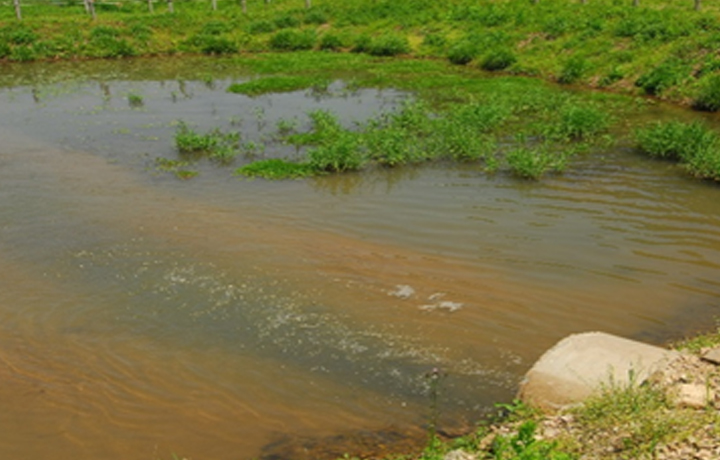
이서천 비점오염저감시설1
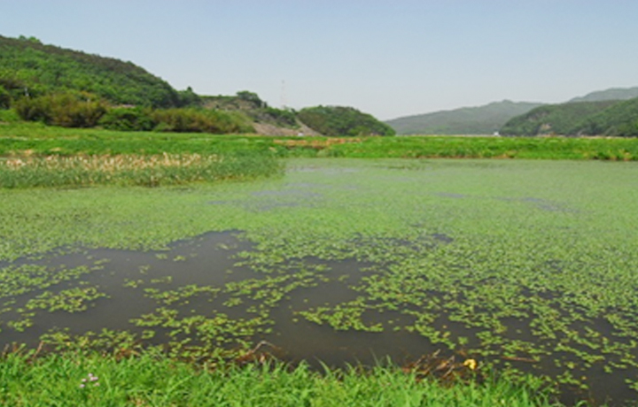
이서천 비점오염저감시설2
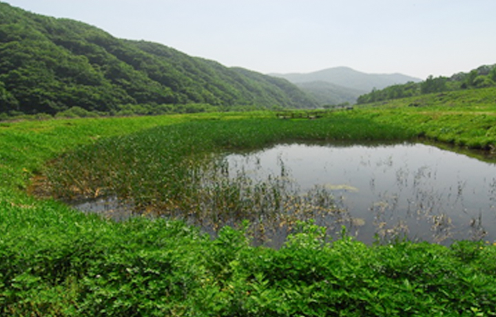
이서천 비점오염저감시설3
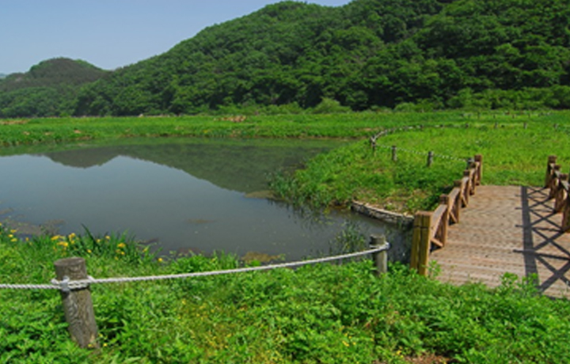
이서천 비점오염저감시설4